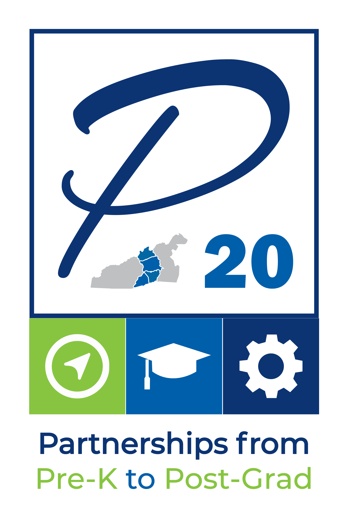
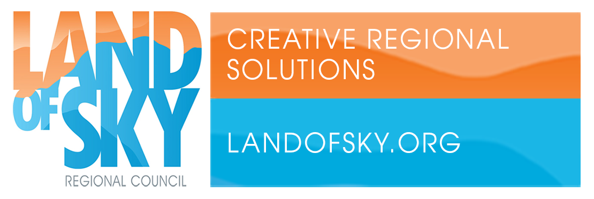

 
Land of Sky P20 KPIs
All
Year
2023
2024
2025
Strategic Direction
Early Education
K-12 Education
Postsecondary Education
Employee Credentials
County
Madison
Buncombe
Henderson
Transylvania
Key Performance Indicator
% of Children in Licensed Care
# of Licensed Sites Serving 0-5 Year Olds
% of Students Cross-Enrolled During K-12
% of Students Who Graduate with a Credential
# of Students Enrolling Into College Courses
# of Students Persisting Past the First Year of Postsecondary Education.
Capacity of Available Training Programs
# of Graduates